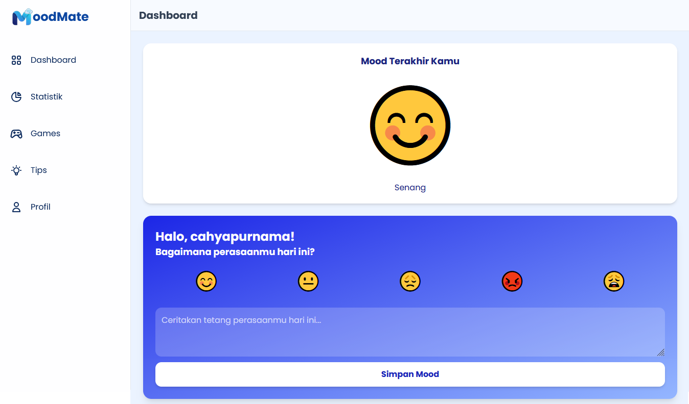

MoodMate
MoodMate merupakan aplikasi kesehatan mental untuk membantu remaja memantau dan mengelola suasana hati melalui fitur pencatatan mood harian, mini-game interaktif, edukasi kesehatan mental, serta rekomendasi mingguan berbasis aturan (rule-based system).
Peran Menjadi programmer dalam tim beranggotakan 2 orang, bertanggung jawab mengimplementasikan hasil pengumpulan dan analisis data dari project lead ke dalam kode program serta mengembangkan fitur aplikasi.